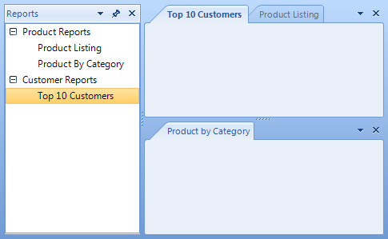
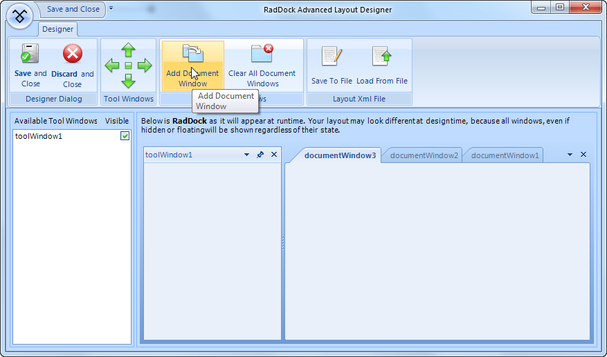

Getting Started
This tutorial creates a shell for a report viewer/explorer. A ToolWindow
on the left represents a list of reports. The right side of the form in
RadDock contains three DocumentWindows,
each representing a report. This tutorial demonstrates the layout of ToolWindow
and DocumentWindows.
It also demonstrates adding a RadTreeView control to one of the created windows and synchronizing
the active DockWindow with the selection in the RadTreeView instance.

Configure the RadDock
Drop a RadDock control on the form.
Set the RadDock Dock property to Fill.
Open the RadDock Smart Tag and select Show Advanced Layout Designer.
This step will display the RadDock Advanced Layout Designer dialog.In the RadRibbonBar on top, click the left green arrow to dock a new ToolWindow to the left.

The list on the left side of the preview displays all created windows. From this list you can set the visibility of the ToolWindows to false,
if you do not need some of them visible at runtime initially.
Again from the RadRibbonBar, click on the Add DocumentWindow button three times to add three DocumentWindows instances.
Click Save and Close button to close the dialog and save the layout to the RadDock.
For more complex scenarios RadDock advanced layout designer provides full drag and drop and user interaction support in the preview RadDock control.
This allows you to the dock a ToolWindow to bottom-right, to set a ToolWindow in AutoHide mode or even to float a ToolWindow.In the designer select the ToolWindow on the left. You can verify this by checking that the currently selected
component in the Properties Window of Visual Studio is ToolWindow.Set the ToolWindow Text property to "Reports".
Select one of the DocumentWindows. To do this in the designer, select the tab (i.e. on "Document1"), then
click inside the client area. Check the Properties Window that you have selected a DocumentWindow.Set the DocumentWindow Name property to "dwProductListing" and Text property to "Product Listing".
Select the next DocumentWindow, set the Name property to "dwProductByCategory" and the
Text property to "Product By Category".Select the last DocumentWindow, set the
Name property to "dwTop10Customers" and Text
property to "Top 10 Customers".Drop a RadTreeView control to the "Reports" ToolWindow, set the control's Dock property
to Fill.Make sure that you have the Telerik.Wincontrols.UI and Telerik.Wincontrols.UI.Docking in the "using" (C#) or "Imports" (VB) section of the code.
[C#] Include namespaces
using Telerik.WinControls.UI;
using Telerik.WinControls.UI.Docking;
[VB.NET] Include namespaces
Imports Telerik.WinControls.UI
Imports Telerik.WinControls.UI.Docking
- Create a Form Load event handler and copy the code below to it. This code builds the TreeView node structure and links the Name__of each __DocumentWindow to the corresponding Node Tag property. Each dockable object has a Name__property, a __String__that uniquely identifies it. Later we use the __Name__to locate the __DocumentWindow and activate it.
[C#] Initializing RadTreeView
void Form1_Load(object sender, EventArgs e)
{
RadTreeNode productNode = radTreeView1.Nodes.Add("Product Reports");
RadTreeNode customerNode = radTreeView1.Nodes.Add("Customer Reports");
RadTreeNode productListingNode = new RadTreeNode("Product Listing");
productListingNode.Tag = dwProductListing.Name;
RadTreeNode productCategoryNode = new RadTreeNode("Product By Category");
productCategoryNode.Tag = dwProductByCategory.Name;
RadTreeNode top10CustomerNode = new RadTreeNode("Top 10 Customers");
top10CustomerNode.Tag = dwTop10Customers.Name;
productNode.Nodes.Add(productListingNode);
productNode.Nodes.Add(productCategoryNode);
customerNode.Nodes.Add(top10CustomerNode);
radTreeView1.ExpandAll();
}
[VB.NET] Initializing RadTreeView
Private Sub Form1_Load(ByVal sender As System.Object, ByVal e As System.EventArgs) Handles MyBase.Load
Dim productNode As RadTreeNode = RadTreeView1.Nodes.Add("Product Reports")
Dim customerNode As RadTreeNode = RadTreeView1.Nodes.Add("Customer Reports")
Dim productListingNode As New RadTreeNode("Product Listing")
productListingNode.Tag = dwProductListing.Name
Dim productCategoryNode As New RadTreeNode("Product By Category")
productCategoryNode.Tag = dwProductByCategory.Name
Dim top10CustomerNode As New RadTreeNode("Top 10 Customers")
top10CustomerNode.Tag = dwTop10Customers.Name
productNode.Nodes.Add(productListingNode)
productNode.Nodes.Add(productCategoryNode)
customerNode.Nodes.Add(top10CustomerNode)
RadTreeView1.ExpandAll()
End Sub
- Create an SelectedNodeChanged event handler and add the following code to it. The code for this event handler verifies that the Tag of the selected node has a value. Further, if this value corresponds to the name of an existing window in RadDock, the appropriate DocumentWindow gets activated.
[C#] Handling the RadTreeView SelectedNodeChanged event
void radTreeView1_SelectedNodeChanged(object sender, RadTreeViewEventArgs e)
{
if (e.Node.Tag != null)
{
DockWindow dw = this.radDock1[e.Node.Tag.ToString()];
if (dw != null)
{
this.radDock1.ActiveWindow = dw;
}
}
}
[VB.NET] Handling the RadTreeView SelectedNodeChanged event
Private Sub RadTreeView1_SelectedNodeChanged(ByVal sender As Object, ByVal e As RadTreeViewEventArgs)
If Not e.Node.Tag Is Nothing Then
Dim dw As DockWindow = Me.RadDock1(e.Node.Tag.ToString())
If Not dw Is Nothing Then
Me.RadDock1.ActiveWindow = dw
End If
End If
End Sub
Press F5 to run the application. Try experimenting with...
Dragging the panel and document tabs
Right-clicking document and panel tabs.
Pressing Ctrl-Tab to invoke the
Quick Navigator.Pinning and un-pinning the DockWindow.
Using the ToolWindow and DocumentWindow menus by clicking the downward arrows.
| RELATED VIDEOS | |
| The new and improved RadDock for WinForms has landed and this is your opportunity to get a first look. Join Developer Evangelist John Kellar as he shows you how quickly you can get up and running with the new version of RadDock. John will cover the new features so you know what to expect and how you can use RadDock in your applications once it is officially released. (Runtime: 32:54) [ Introducing the new RadDock for WinForms ](http://tv.telerik.com/winforms/raddock/introducing-new-raddock-winforms) | In this video, you will learn how to get started with the run-time and design-time features in the new RadDock for WinForms. You will see the rich RadDock run-time features in action and you will see how easy it is to get started with RadDock in Visual Studio. You will also be introduced to the new Advanced Layout Designer for RadDock, a design-time tool that makes it easy to customize yoru RadDock layouts. (Runtime: 09:42) [ Getting Started with RadDock for WinForms ](http://tv.telerik.com/winforms/raddock/getting-started-with-raddock-winforms) |